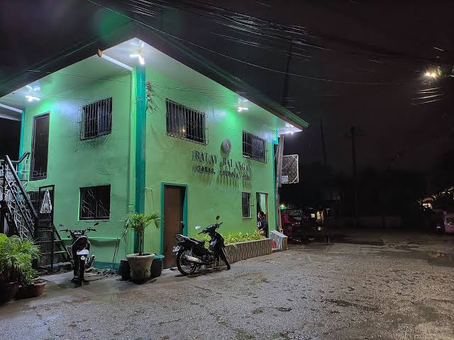
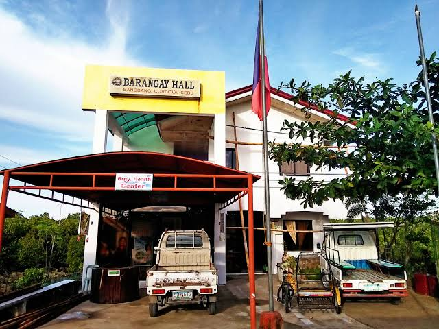
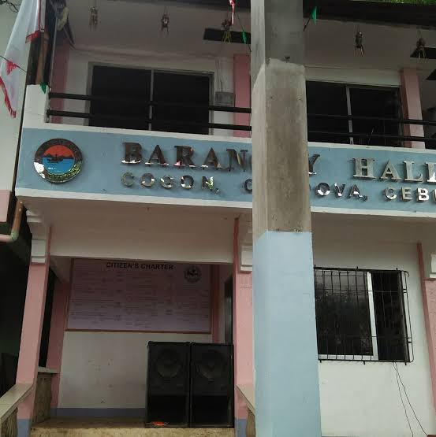
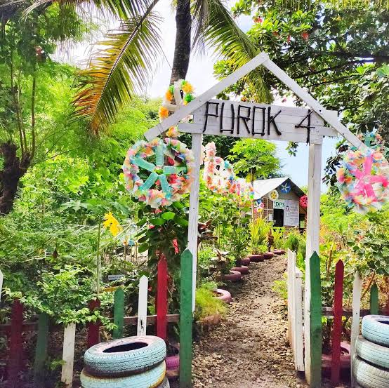

Ibabao means upper area, was separated from Lapu-lapu City by Pilipog river towards the northwest.
History of Cordova
THE ORIGIN BEHIND CORDOVA'S NAME AND ITS BARANGAYS

"Cordova is not the original name of the territory it presently represents, nor even the Spanish name "Cordoba". Its territory comprises the original barrios ("balangays" in Cebuano) of Gabi, Day-as, and Pilipul (actually Pilipog)-all of which are located in the southern tip of Mactan Island. The three Balangays became known as the town of Cordoba on May 22, 1863. Governor -General Rafael de Echague y Birmingham decreed it. The townspeople wanted to adopt one of the names of the three balangays as the town's name. "Gabi" and Pilipog are names of a root crop and coconut variety, respectively. Their choice was Day-as, which means "to venture or dare". However, Governor General Echague chose the name "Cordoba which means stark nakedness" and "bare". Echague, a Spaniard, certainly derived the name from Cordoba, Espana.


Bangbang was derived from the strength of one Mariano Sumagang who, after a strong typhoon that felled a big tree in the area, single-handidly lifted it to the amazement and excitement of the peoplewho exclaimed in Cebuano: "Dili Mabangbang ang Kakuşgan nianang tawhana
Buagsong is best remembered as the place of Ayong and as the chief source of bakasi eel, the aphrodisiac delicacy of Cordova.

Catarman was known earlier as Catagman, which means "traumatizing presence". Its water is salty and tastes awful, making strangers remark in Cebuano: "katagman man sab ning dapita" (this place is traumatizing)

Except for Ibabao (created in 1913), Catarman (established on May 3, 1922) Buagsong and Bangbang (in the 1930's), the rest of the barangays of Cordova were created after the war: Cogon, Dapitan, San Miguel, Alegria, and Gilutongan. When still part of Pilipog, Cogon was fully covered with grass locally known as cogon, hence its name.

Dapitan was sitio Kalanggaman of Pilipog before, the habitat of different species of birds in its forested area. Its early settlers were strong enticers (kusog manapit) of the people to live in their place. Hence the name "Dapitan".
San Miguel, also a sitio of Pilipog, was named after its patron saint St. Michael, the Archangel, whom the people considered as their protector, upon Pilipog's conversion as a barrio.
Alegria was derived from the Spanish word alegre which means merriment.
Gilutongan is the only islet barangay of Cordova, across the Gilutongan channel which is next to Surigao Deep in depth. It became a barangay in the 1940's. It got its name from hilot (meaning massage), which fishermen got after hours of fishing